Motion system analysis
Studied gantry and toolhead motion to understand dynamic loading and positioning behavior.
PROJECT 04 / ADDITIVE MANUFACTURING
A large-format printer combining a 500 × 500 × 400 mm build volume with a carefully engineered frame and motion system.
CASE STUDY / 04—04
01 / THE PROJECT
I co-designed the mechanical structure of Titan V3, a commercial large-format FFF 3D printer with a 500 × 500 × 400 mm build volume.
At this scale, frame deflection and vibration directly affect print quality. Motion system simulations and frame rigidity analysis informed the mechanical layout, with sub-millimeter positional accuracy as a design goal.
The structure was developed with stiffness, thermal stability, maintenance access, and manufacturing cost in mind. The result is a mechanical platform built around the demands of large-format printing.
02 / ENGINEERING FOCUS
Studied gantry and toolhead motion to understand dynamic loading and positioning behavior.
Assessed structural stiffness and resonance to improve the foundation for accurate printing.
Balanced structural performance with assembly, service access, and manufacturability.
03 / PROBLEM & APPROACH
A large build area changes the engineering problem. Longer frame members and wider gantry travel increase the importance of stiffness, alignment, vibration control, and thermal consistency. At the same time, the printer must remain practical to manufacture, assemble, operate, and service.
My mechanical-design work focused on the structure and motion system. The broader mechanical R&D scope also covered design for manufacturing and assembly, part fabrication, and the physical build. The documented project moves from an open-frame assembly and CAD model to an enclosed printer shown during operation.
Challenge A larger print envelope makes frame deflection and vibration more consequential for toolhead position and surface quality.
Engineering response Frame-rigidity and resonance analysis informed the structural layout. Stiffness was considered alongside enclosure space, access to the print bed, and fabrication cost.
Challenge Long gantry moves can amplify the effects of belt tension, moving mass, and dynamic loading.
Engineering response Motion-system simulations guided the layout. The documented enclosed configuration uses a CoreXY arrangement with GT2 belts and TMC2209-driven motion control.
Challenge A broad build surface and high material throughput require attention to bed heating, extrusion capacity, and thermal management.
Engineering response The enclosed configuration specifies a heated glass bed, a direct-drive dual-gear extruder, a swappable 0.8 mm nozzle, and a 300°C-capable hotend. These are design provisions, not independently verified performance results.
Challenge Size and enclosure can complicate fabrication, assembly, maintenance access, and safe operation.
Engineering response The design-for-assembly work considered manufacturable parts and access through cabinet doors. The documented configuration includes a touchscreen, door interlock, thermal-runaway protection, and power-loss resume.
The gallery documents a CAD concept, an initial assembly, an operating printer, and a completed enclosure. Together they show the progression from mechanical design to a built large-format machine. The listed accuracy, repeatability, speed, and temperature figures are configuration specifications; no independent test report is included here.
04 / BUILD DOCUMENTATION
The project documentation records an early open-frame assembly and an enclosed iteration built for large-scale additive manufacturing. The engineering objective was to combine a stable heated bed, high-flow extrusion, and quiet actuation for research and industrial prototyping.
Build volume stated for the Titan V3 mechanical design above.
Build volume specified for the separate enclosed configuration shown below.
Design for manufacturing and assembly; part fabrication and printer assembly.
SolidWorks, Marlin 2.0, Ultimaker Cura, and PrusaSlicer. Aluminum alloy, stainless steel, PLA, and ABS; laser cutting, FDM, bending, and arc welding.
05 / ENCLOSED CONFIGURATION
These specifications describe the documented 510 × 510 × 550 mm enclosed iteration, not the 500 × 500 × 400 mm Titan V3 configuration introduced above.
06 / PROJECT GALLERY
Eleven project photographs and design views, from the first assembly through the enclosed machine.
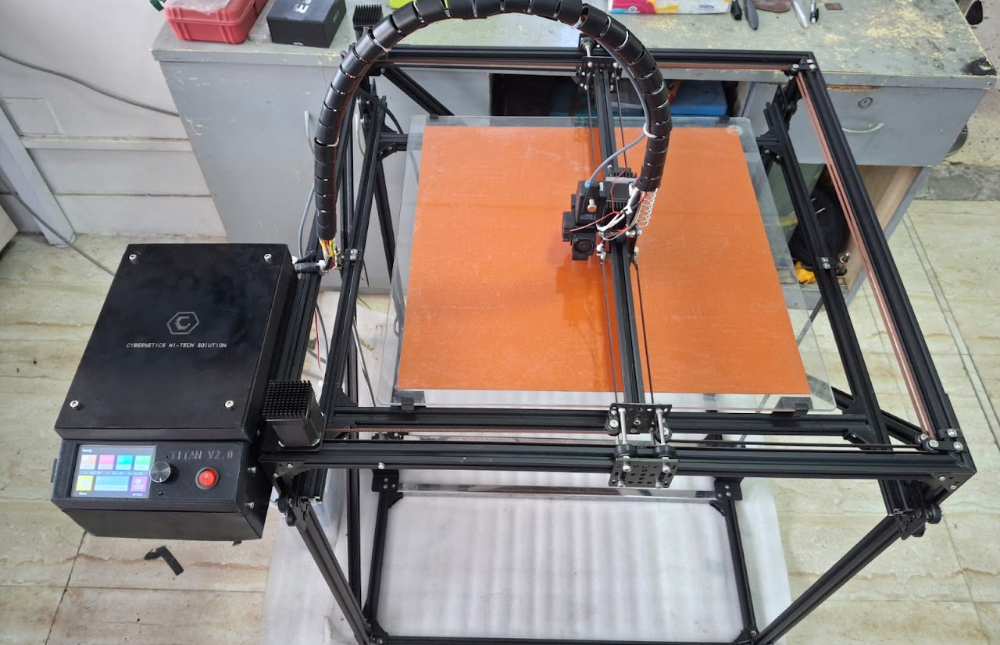
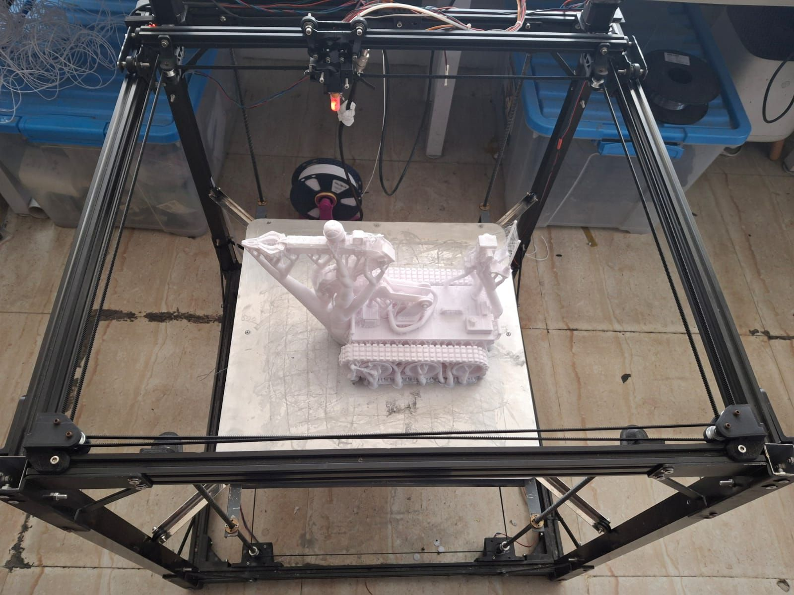
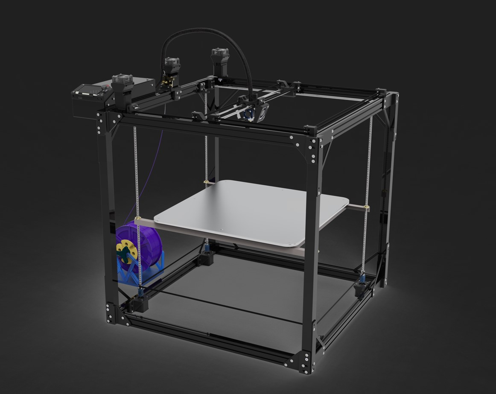
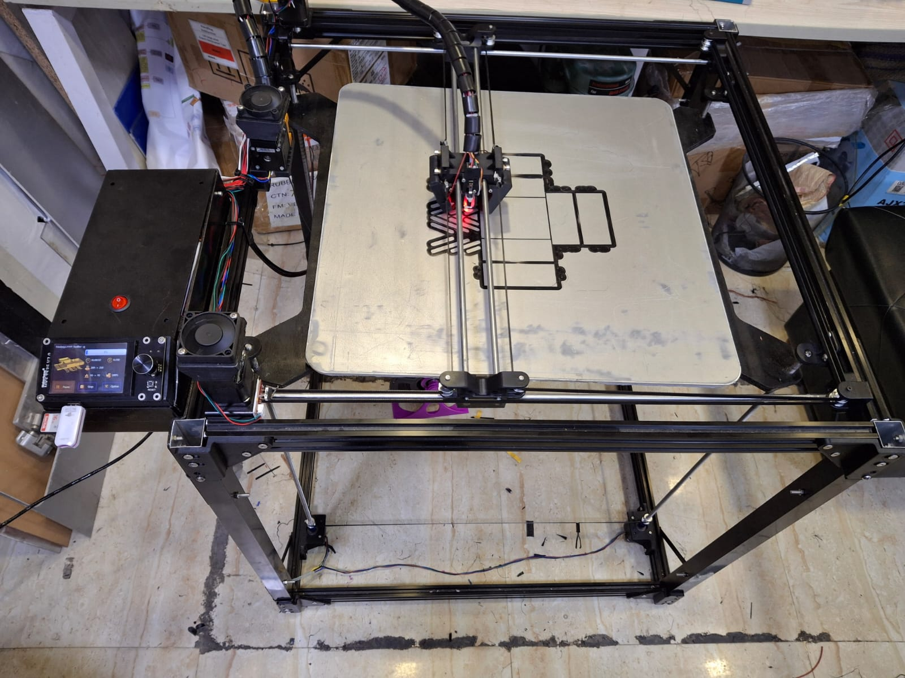
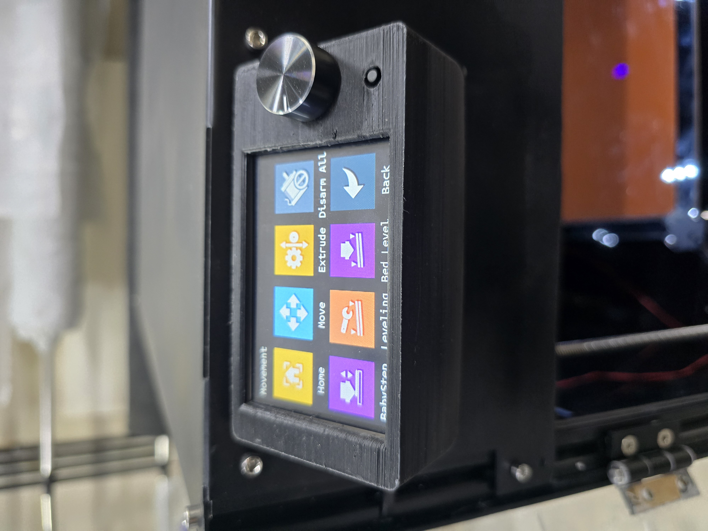
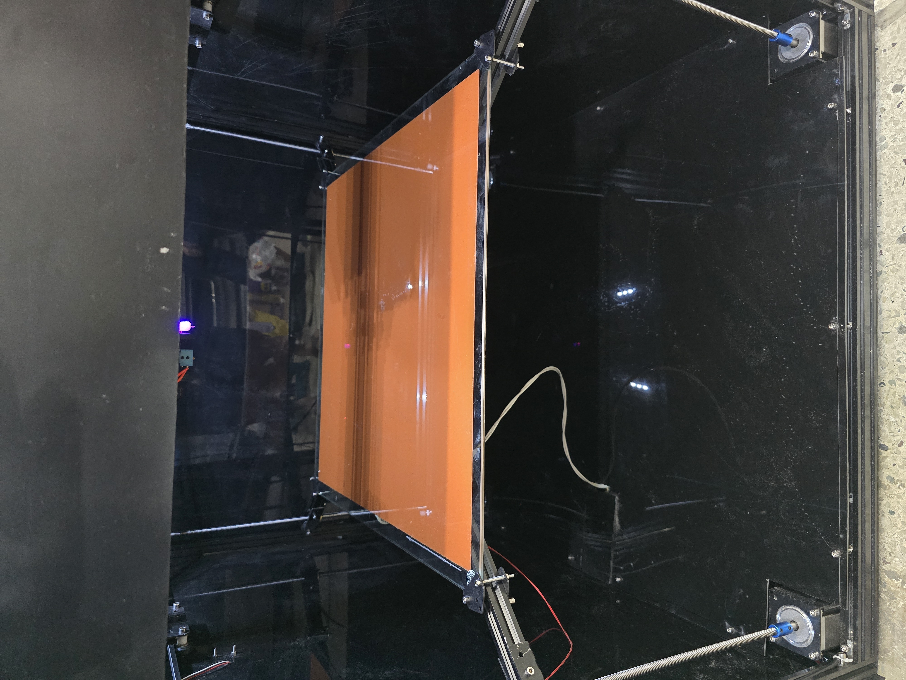
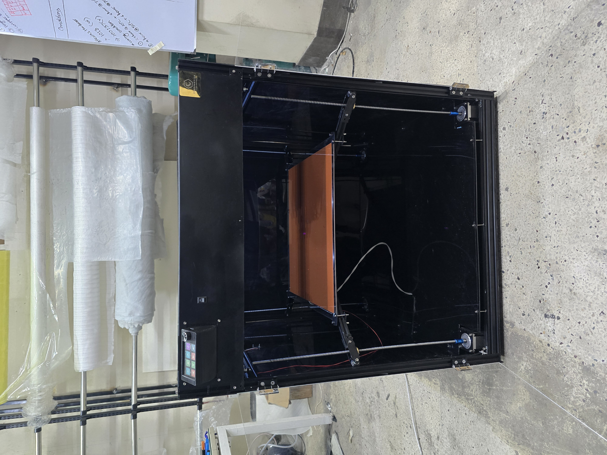
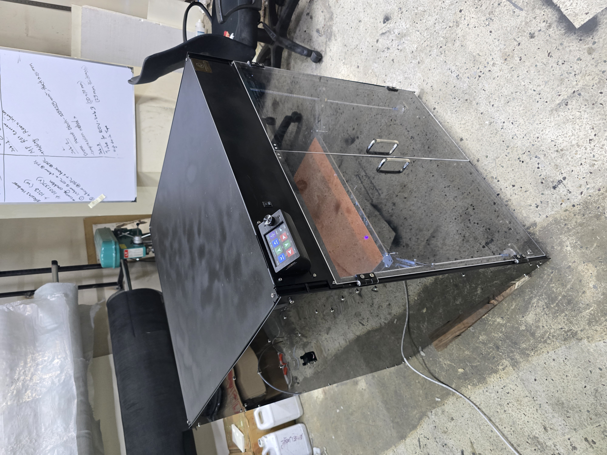
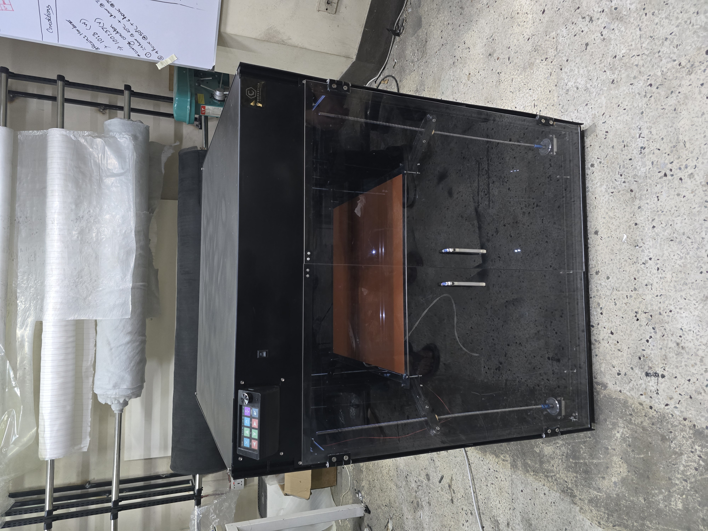
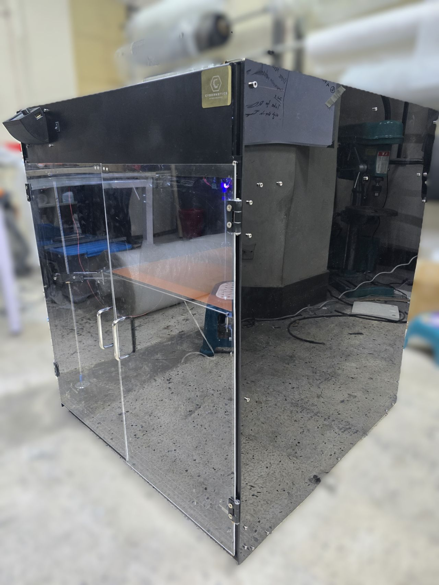
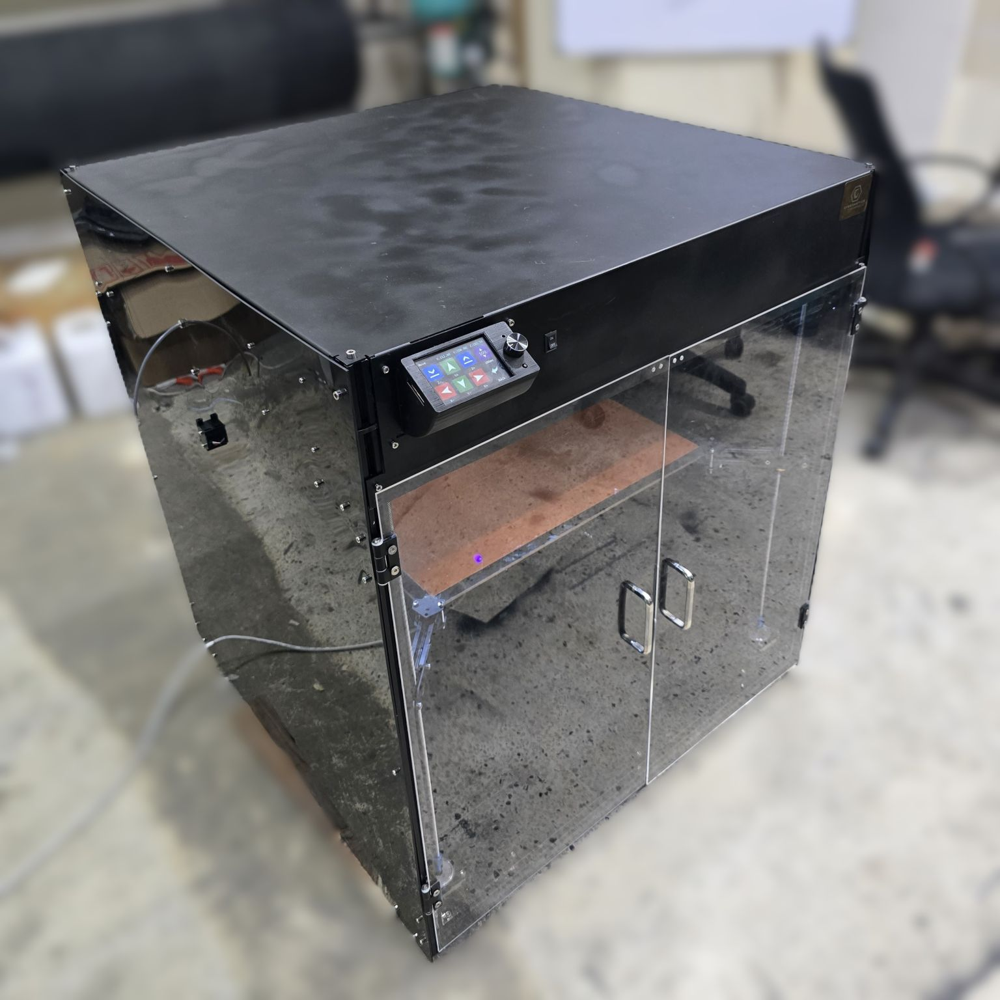
07 / START A CONVERSATION
Open to projectsFrom a first sketch to a working prototype.
Let’s talk about what you’re building.